11th May 2022
I have no idea what this thing is. Not good enough yet to reverse it fully but writing up my notes anyway. Feel slighly defeated. Called Invoice because that's the name of file that gets downloaded - Invoice.iso.
EDIT:
Joe Sandbox seems to have done a pretty thorough analysis of svchost.dll:
A HTML web page with embedded javascript downloads Invoice.iso to the target user's system. Inside the ISO is a hidden svchost.dll and a shortcut to a documents folder. Instead of opening any documents, this shortcut executes the beforementioned svchost.dll via rundll32.exe. What svchost.dll does I can't figure out; it seems to terminate abruptly without doing anything as far as I can tell.
An invoice is sent to the target user.
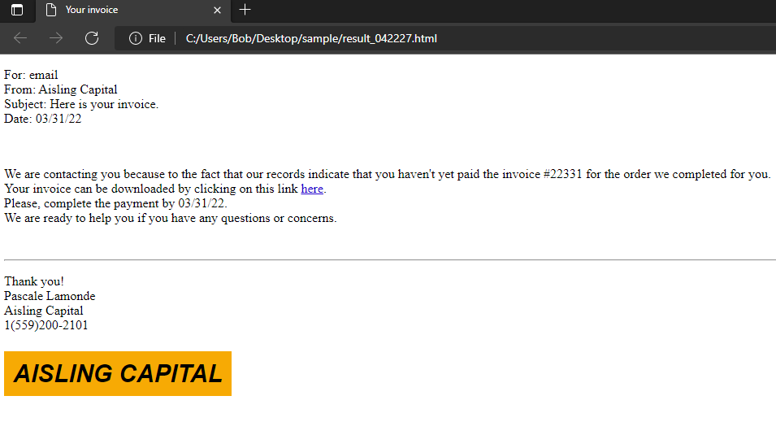
JavaScript on the HTML page converts the embedded base64 Invoice.iso from base64 to blob and downloads it to the target user's system. This entire download can be prevented if JavaScript is stopped from executing automatically via a plugin like NoScript.
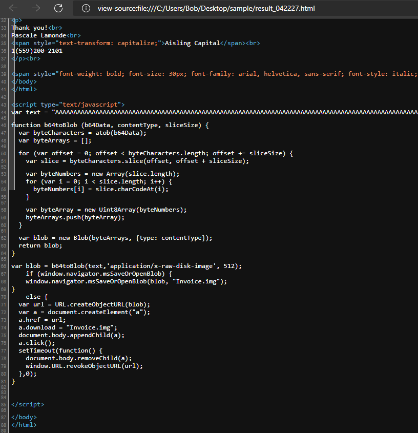
A potential indication that this malware is a recent effort is the payment request of 03/31/22 which has a similar compile time to the svchost.dll embedded in the ISO.
When mounted, the Invoice.iso is shown to contain a hidden svchost.dll and a shortcut to a documents folder.
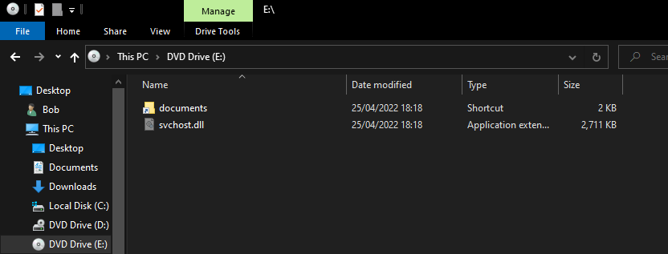
documents executes one of svchost.dll's exported functions - pGUAYVFxbN - via rundll32.exe: C:\Windows\System32\rundll32.exe svchost.dll,pGUAYVFxbN. There's nothing else on the ISO. I assume the malware authors hope that the user will mount this downloaded ISO themselves and click on the documents shortcut to get the malware to execute.
MD5: 39fb644929c57fb75aace407f429cb12
SHA-1: f449e79493fcf15dc870466e2ea639d2cbcd8e14
SHA-256: a54302b0bf056c65deb759122f71e757b11155d82e648f9e206dab91aab44bd4
File type: Win32 DLL
Magic: PE32+ executable for MS Windows (DLL) (GUI) Mono/.Net assembly
File size: 2.65 MB (2775552 bytes)
svchost.dll is a 64bit DLL that, I think, contains further embedded PE files and code.
Its compile time is pretty recent.
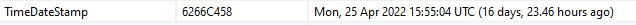
Its sections and their VirtualSize and RawSize don't suggest any compressed data.
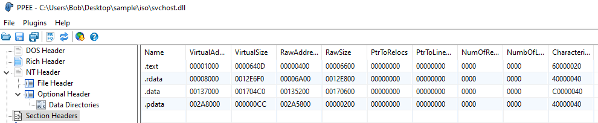
However, entropy of the sections suggests that .data potentially contains encrypted data.
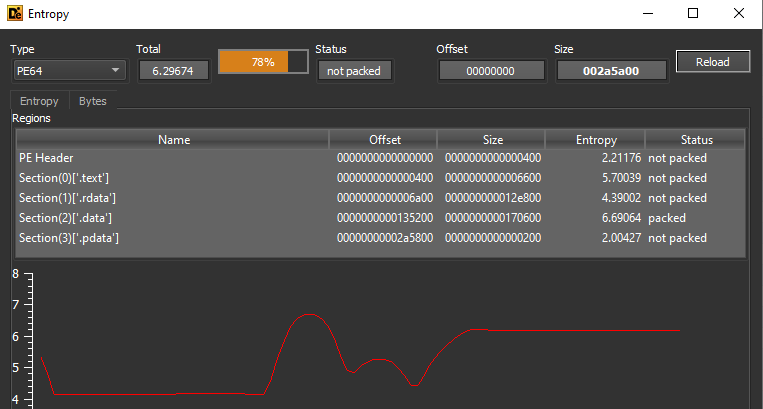
It has 1 exported function, which gets executed via rundll32.exe and contains all the code.
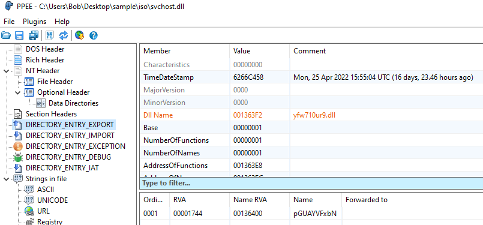
Its imports are pretty minimal. LoadLibraryA and GetProcAddress are present which suggest dynamic imports.
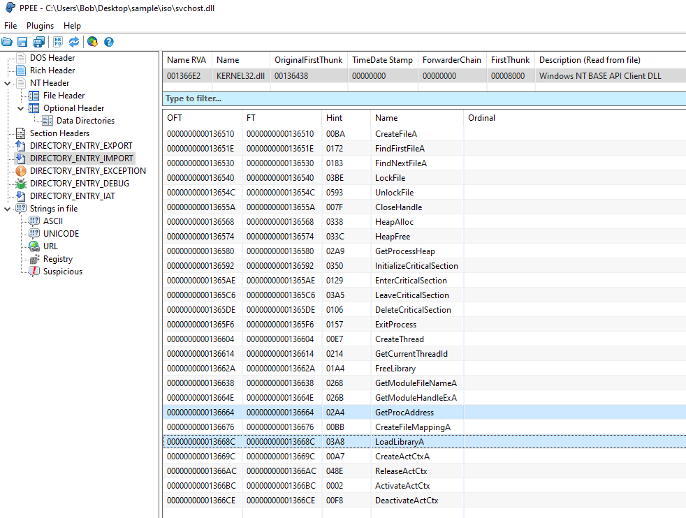
The only string of note is a long list of words. What this is I don't know, if anything. Everythingn else is import names and junk.
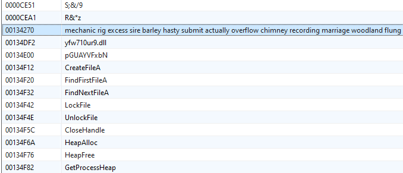
Dynamic analysis of the DLL didn't reveal anything extra.speakeasy will timeout after trying to allocate heap memory:
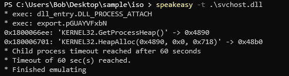
You can debug the DLL in x64dbg by loading rundll32.exe and doing File > Change Command Line to execute svchost.dll and its pGUAYVFxbN exported function.
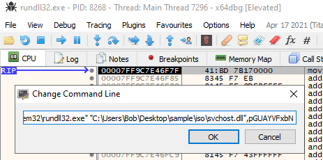
If you set a breakpoint on kernel32.GetProcessHeap (the first function the DLL calls) and F9 to continue you'll get an EXCEPTION_ACCESS_VIOLATION and never reach the loaded svchost DLL. I have no idea why.
Instead do Options > Preferences and break on DLL Load.
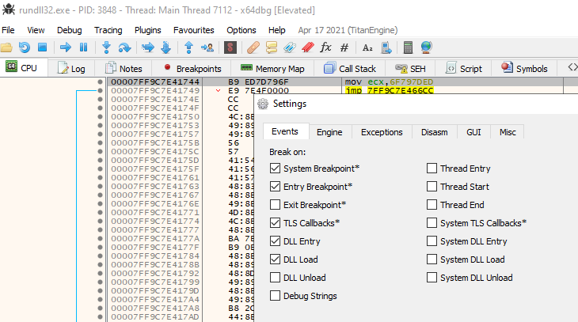
pGUAYVFxbN is located 0x1744 bytes from the base address.
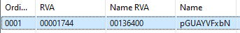
Once svchost.dll has been loaded, grab its loaded bases address from the Memory Map tab and navigate in the disassembler to base address + 0x1744 and set a breakpoint at the start of the pGUAYVFxbN function. You should be able to step through the DLL now.
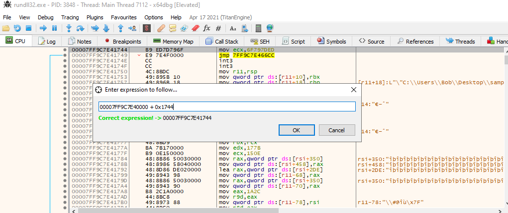
A call to 7FF9C7E42EB0 performs recon of the system (pictured are my environment variables) and dumps it into a huge array of memory.
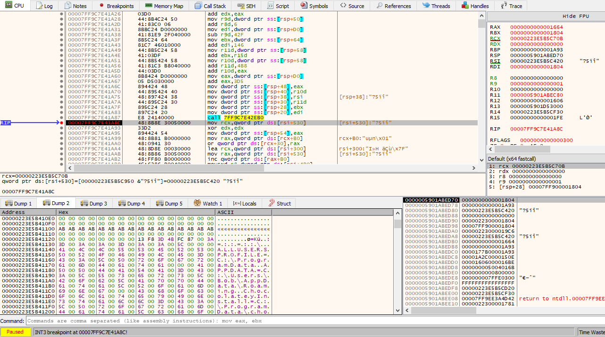
You can step through with x64dbg or use API monitor to find what functions it resolves and calls.
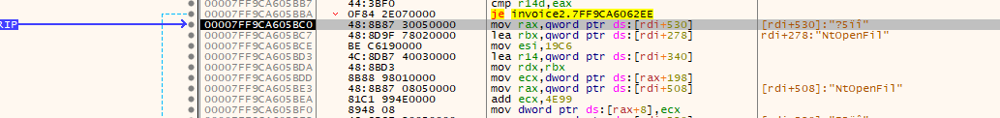
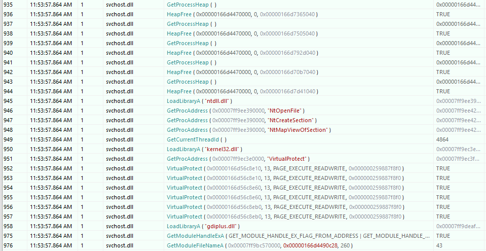
I can't make sense of it. It resolves functions for injection: NtOpenFile, NtCreateSection, NtMapViewOfSection, but never calls them. It also allocates only 13 bytes of executable memory at multiple different addresses.
If you set a breakpoint on kernel32.GetModuleFileNameA and F8 over the jmp and then Ctrl+F9 to execute until return (which should drop you into the svchost.dll which called it) and single step until you reach the ret in r14 you find, what looks to me, a 2nd decrypted in-memory DLL.
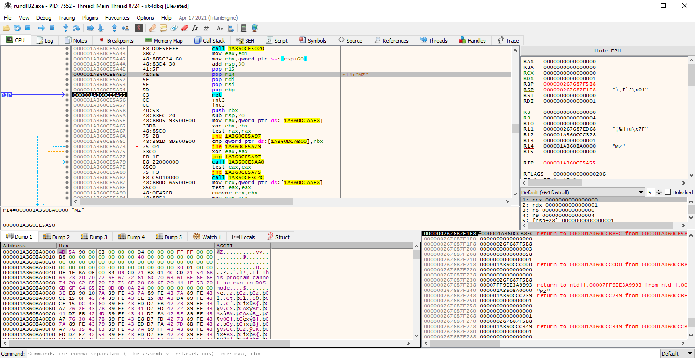
Dump it with savedata :memdump:,0x000001A360BA0000,0x24AFF0.
This must be a further payload.
The hash of this PE changes every time I dump it. It's another 64bit DLL, its compile time is a similar date to svchost.dll (21st April 22 rather than 25th April), its import table is scuffed but in its strings are references to OpenSSL, anti-debug and anti-vm detection, and the C++ boost library.
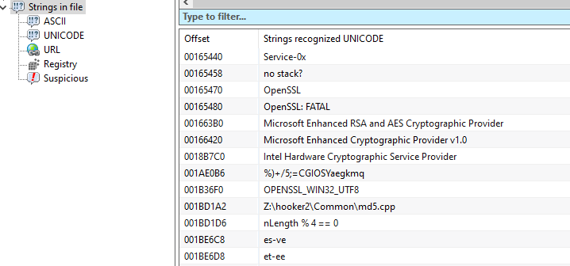
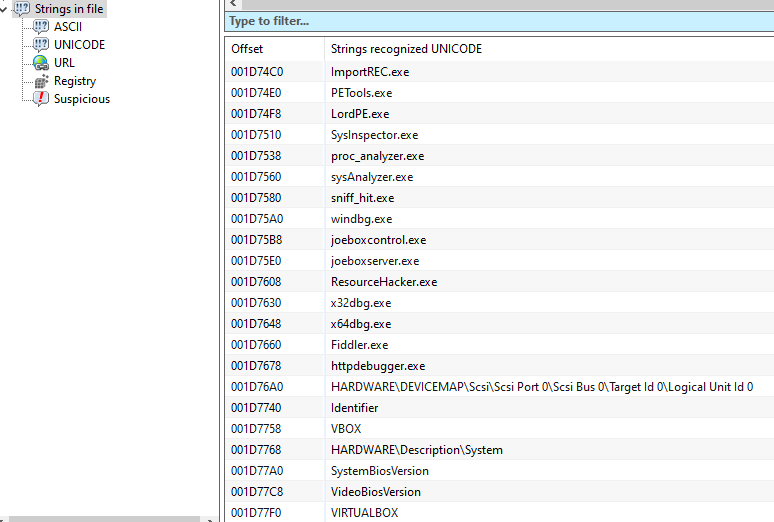
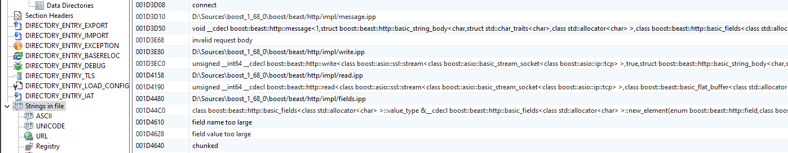
I have no idea what this malware does :)
Moving on because I don't know what to do. It has a ton of capabilities but I'm not convinced that any of it executes because the code just terminates abruptly.